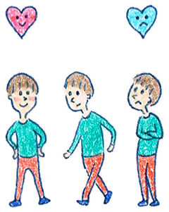

７ : 心理学は認知行動療法が基本
・心理学は認知行動療法が基本

前回までに、コミュニケーション能力を向上させるには、心理学の学習が近道であるとお伝えしました。とは言っても心理学の世界も本当に広いです。 コミュニケーションに関連が深い分野ですと、交流分析、マインドフルネス認知療法、社会心理学、森田療法、認知行動療法、SST、アサーション・・・と数え切れないぐらいの分野があります。
このなかで何を取っ掛かりとして学習していくかが問題になるのですが、まずは認知行動療法から学ぶことをオススメしています。
認知行動療法は今最もポピュラーな心理療法の一分野で、心理学を学ぶと必ずと言っていいほど学ぶことになる分野です。科学的なエビデンスも豊富にあるので、入り口としてオススメしています。
・「認知行動療法」ってなんだ？
最初にアメリカの精神医学科医、アーロン・Ｔ・ベック博士が「認知療法」を発表しました。（この人はラスカー賞（臨床医学研究部門）を受賞したりノーベル賞にもノミネートされた有名な人です！）
認知療法は、認知（考え方）を修正する療法です。私たちは、人間関係になにかあるとあれこれ考えますよね。
・飲み会で孤立するのは恥ずかしい
・あの人は「冷たい人間に違いない」
・初対面の人にこんな質問したら失礼だ
とか色々と考えますね。
1950年あたりに「考え方」が心の問題やコミュニケーションにとても大きな影響を及ぼすことがわかってきたのです。
認知療法は、うつ病や不安障害などの精神疾患の治療法として世界的に注目されるようになります。
ただ、考え方を変えるだけで心の問題がなんとかなるとそう簡単ではありません。何が大事になるかというと、実際に行動しながら改善することが大事になります。これを行動療法と言います。
そこでイギリスのクラークらが認知療法と行動療法を組み合わせた「認知行動療法」を生みだしました。
・精神疾患からビジネスの世界まで
現在では、認知行動療法がうつ病だけではなく、摂食障害、人格障害、統合失調症等のあらゆる精神疾患の治療、再発予防に効果的であることがわかっています♪
更に認知行動療法は精神医療の現場だけではなくビジネスマン、学校の生徒指導などでも認知行動療法をするところが増えてきました。
現在では認知行動療法の本も多く発売されています。しかし、実際に読むと専門用語が並び戸惑うこともあるかもしれません。
・認知行動療法をわかりやすく解説
そこで今回は認知行動療法をやさしい言葉で説明し、みなんさんと一緒に認知行動療法を学んでいきたいと思います。
当心理トレーニングでは以下の4点を目標としたいと思います。
目標
・ 思考と感情を分けられる
・ 物語を作らず現実的に考える
・ 思考の歪みをチェック
・ 思考の歪みを柔軟にする
認知行動療法の具体的な内容については、次回から詳しく解説していきますね！
 |
|